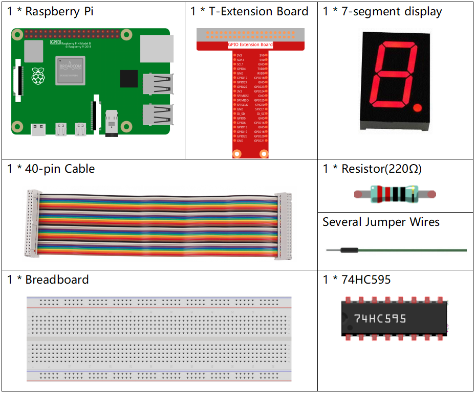

Note
Bonjour et bienvenue dans la communauté des passionnés de SunFounder Raspberry Pi & Arduino & ESP32 sur Facebook ! Plongez dans l’univers du Raspberry Pi, d’Arduino et d’ESP32 avec d’autres passionnés.
Pourquoi nous rejoindre ?
Support d’experts : Résolvez vos problèmes après-vente et surmontez vos défis techniques grâce à l’aide de notre communauté et de notre équipe.
Apprendre & Partager : Échangez des astuces et des tutoriels pour améliorer vos compétences.
Aperçus exclusifs : Obtenez un accès anticipé aux annonces de nouveaux produits et à des avant-premières.
Réductions spéciales : Profitez de remises exclusives sur nos derniers produits.
Promotions festives et cadeaux : Participez à des concours et à des promotions pendant les fêtes.
👉 Prêt à explorer et à créer avec nous ? Cliquez sur [Ici] et rejoignez-nous dès aujourd’hui !
Afficheur à 7 segments
Introduction
Dans ce projet, nous allons contrôler un afficheur 7 segments pour afficher des chiffres de 0 à 9 ainsi que les lettres de A à F.
Composants
Schéma de câblage
Connectez la broche ST_CP du 74HC595 au GPIO18 du Raspberry Pi, SH_CP au GPIO27 et DS au GPIO17. Les ports de sortie parallèle sont connectés aux 8 segments de l’afficheur à 7 segments. Les données d’entrée sont envoyées à la broche DS du registre à décalage lorsque SH_CP (l’entrée d’horloge du registre à décalage) est sur front montant, et envoyées au registre de mémoire lorsque ST_CP (l’entrée d’horloge du registre de mémoire) est sur front montant. Ainsi, en contrôlant les états de SH_CP et ST_CP via les GPIO du Raspberry Pi, vous pouvez transformer les données d’entrée série en sortie parallèle, économiser des GPIO et piloter l’afficheur.

Procédures expérimentales
Étape 1 : Construire le circuit.

Étape 2 : Accéder au dossier du code.
cd ~/davinci-kit-for-raspberry-pi/nodejs/
Étape 3 : Exécuter le code.
sudo node 7-segment_display.js
Après l’exécution du code, vous verrez l’afficheur 7 segments afficher 0-9, puis A-F.
Code
const Gpio = require('pigpio').Gpio;
const segCode = [0x3f, 0x06, 0x5b, 0x4f, 0x66, 0x6d, 0x7d, 0x07, 0x7f, 0x6f, 0x77, 0x7c, 0x39, 0x5e, 0x79, 0x71];
const SDI = new Gpio(17, { mode: Gpio.OUTPUT });
const RCLK = new Gpio(18, { mode: Gpio.OUTPUT });
const SRCLK = new Gpio(27, { mode: Gpio.OUTPUT });
function hc595_shift(dat) {
for (let j = 0; j < 8; j++) {
let code = 0x80 & (dat << j);
if (code != 0) {
code = 1;
}
SDI.digitalWrite(code);
SRCLK.trigger(1,1);
}
RCLK.trigger(1,1);
}
let index = -1;
setInterval(() => {
index = (index+1)%16;
hc595_shift(segCode[index]);
}, 1000);
Explication du code
const segCode = [0x3f,0x06,0x5b,0x4f,0x66,0x6d,0x7d,0x07,0x7f,0x6f,0x77,0x7c,0x39,0x5e,0x79,0x71];
Définir un tableau de segments hexadécimaux (cathode commune) de 0 à F.
const SDI = new Gpio(17, { mode: Gpio.OUTPUT });
const RCLK = new Gpio(18, { mode: Gpio.OUTPUT });
const SRCLK = new Gpio(27, { mode: Gpio.OUTPUT });
Initialiser les broches 17, 18 et 27 en mode sortie, et les assigner respectivement aux constantes SDI, RCLK et SRCLK.
function hc595_shift(dat) {
for (let j = 0; j < 8; j++) {
let code = 0x80 & (dat << j);
if (code != 0) {
code = 1;
}
SDI.digitalWrite(code);
SRCLK.trigger(1,1);
}
RCLK.trigger(1,1);
}
- Implémenter une fonction
hc595_shiftpour convertir les valeurs du tableau segCodeen signaux à afficher sur l’afficheur 7 segments.
let code = 0x80 & (dat << j);
if (code != 0) {
code = 1;
}
SDI.digitalWrite(code);
Attribuer les données de dat à SDI(DS) bit par bit.
Supposons que dat=0x3f (0011 1111), lorsqu’on déplace j=2, 0x3f se déplace de 2 bits vers la gauche.
1111 1100 (0x3f << 2) & 1000 0000 (0x80) = 1000 0000, ce qui est vrai.
À ce moment-là, 1 est écrit dans SDI.
SRCLK.trigger(1,1);
Générer une impulsion montante et déplacer les données DS vers le registre à décalage.
trigger(pulseLen, level)pulseLen - pulse length in microseconds (1 - 100)
level - 0 or 1
Envoie une impulsion de déclenchement au GPIO.
Le GPIO est défini à level pendant pulseLen microsecondes, puis réinitialisé au niveau opposé.
RCLK.trigger(1,1);
Générer une impulsion montante et déplacer les données du registre de décalage au registre de mémoire.
let index = -1;
setInterval(() => {
index = (index+1)%16;
hc595_shift(segCode[index]);
}, 1000);
Enfin, utilisez la fonction hc595_shift() pour convertir les valeurs de
segCode et les afficher à travers l’afficheur numérique.
Image du résultat